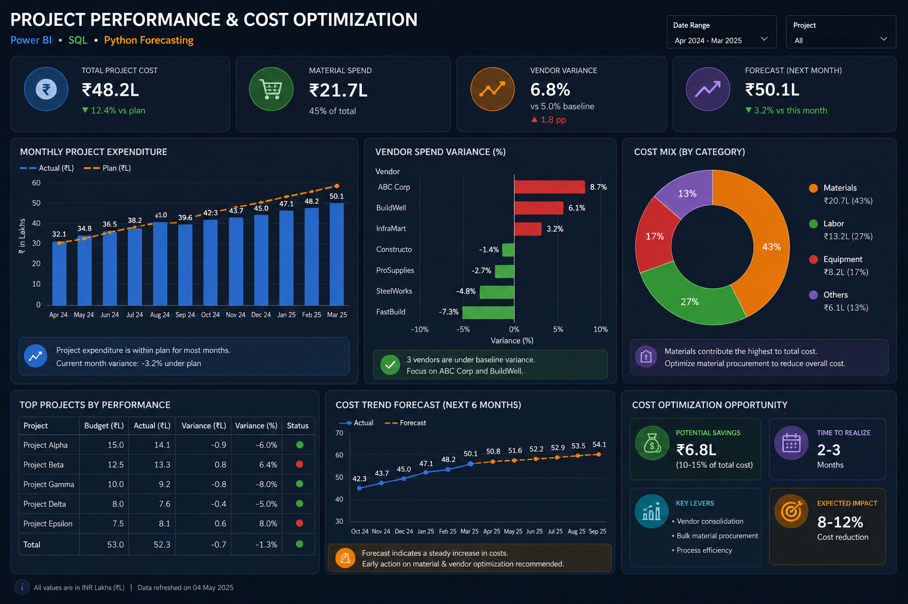

Business Intelligence
Business Performance & Cost Optimization Dashboard
Designed an end-to-end analytics solution to track project costs, material usage, vendor performance, and monthly profitability. SQL transformations prepared analysis-ready data, Power BI enabled drill-down analysis, and Python forecasting added forward-looking cost visibility.
Power BISQLPython
Outcome: identified 10–15% cost-optimization opportunities.
View case study →